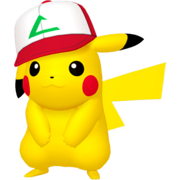
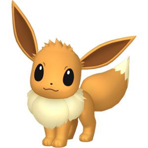

Pikachu est un petit Pokémon joufflu qui ressemble à un rongeur, au corps recouvert d'un pelage jaune avec deux bandes horizontales brunes dans le dos. Il a une petite bouche, de longues oreilles pointues aux extrémités noires et des yeux noir et blanc. Il a sur chacune de ses joues un marquage rouge qui est en réalité une poche contenant de l'électricité. Il a cinq petits doigts au bout de chacun de ses membres antérieurs, tandis que ses pattes postérieures ont trois petits orteils. Il a de la fourrure brune à la base de sa queue en forme d'éclair. Bien que catégorisé comme quadrupède, il est capable de se tenir et de se déplacer sur ses pattes postérieures.

Évoli est un Pokémon mammalien quadrupède, entre canin et félin, avec une fourrure principalement brune. Le bout de sa queue broussailleuse et son gros col de fourrure sont de couleur crème. Il a de petites jambes minces avec trois petits orteils et un coussinet rose à chaque patte. Évoli a des yeux marron, de longues oreilles pointues et un petit nez noir. On trouve rarement ce Pokémon à l'état sauvage, et plus souvent dans les villes et les zones urbaines. Cependant, on dit qu'Évoli a une structure génétique irrégulière qui lui permet de s'habituer à tous types d'environnements. Évoli peut évoluer en huit formes différentes à ce jour, selon son environnement.

Ectoplasma est un Pokémon bipède violet foncé avec un corps rondouillard. Il a de grands yeux rouges, une large bouche arborant souvent un rictus sinistre et des oreilles pointues. Il a sur son dos et sur sa tête des piques qui ressemblent à de la fourrure ébouriffée. Ses bras et ses jambes sont trapus avec trois doigts sur chaque bras et chaque jambe. Il a également une petite queue.